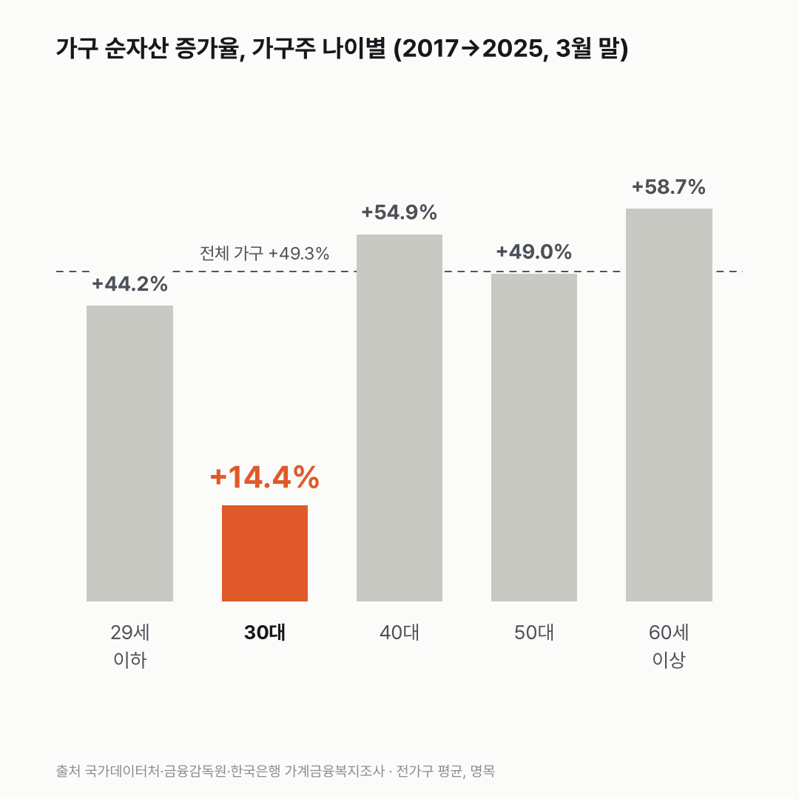
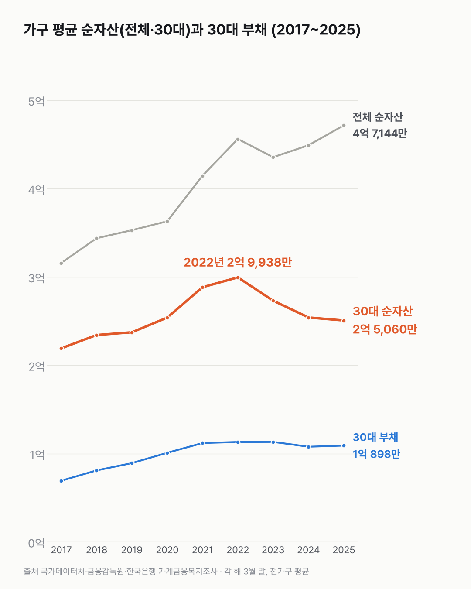

빚 빼고 남은 재산, 8년 새 30대 가구가 가장 덜 늘었어요
30대가 가구주인 가구는 빚이 더 빨리 늘고 순자산은 더 느리게 늘었어요. 2022년보다 순자산이 줄어든 건 이 나이대뿐이에요.

- 2017년에서 2025년 사이 가구 평균 순자산(재산에서 빚을 뺀 것)은 전체 49.3%, 30대 가구 14.4% 늘었어요. 나이대 중 가장 적어요.
- 같은 기간 30대 가구의 빚은 57.5% 늘었어요. 전체는 34.3%예요.
- 30대 가구 순자산은 2022년 2억 9,938만 원이 가장 많았고, 3년 연속 줄어 2025년엔 2억 5,060만 원이에요.
8년 전 표부터 펼쳐 봤어요. 그해 가구주가 30대인 가구의 평균 순자산은 전체 가구 평균의 69%였어요. 2억 1,904만 원 대 3억 1,572만 원. 2025년엔 이 비율이 53%로 내려와요. 그사이 순자산은 29세 이하 44.2%, 40대 54.9%, 50대 49.0%, 60세 이상 58.7% 늘었고, 30대 가구는 14.4%였어요.
빚은 30대가 더 빨랐어요. 6,920만 원에서 1억 898만 원으로 57.5% 늘었고, 전체 가구는 34.3%였어요. 재산 가운데 빚이 차지하는 비율도 30대는 24.0%에서 30.3%로 올라갔어요. 전체 가구는 18.4%에서 16.8%로 내려갔고요.
해마다 이어 보면 꺾이는 해가 보여요. 30대 가구 순자산이 가장 많았던 건 2022년, 2억 9,938만 원. 그 뒤 3년 내리 줄어 2025년엔 2022년보다 16.3% 적어요. 전체 가구는 2023년에 한 번 줄었다가 2024·2025년에 다시 늘어 2022년 값을 넘었어요. 2022년보다 줄어든 건 30대 가구뿐이었어요.

식구 수도 8년 전과 달라요. 30대 가구주 가구의 평균 가구원 수는 3.0명에서 2.1명이 됐어요(전체 2.8명 → 2.3명). 물론 평균이 덜 늘어난 데엔 이 변화도 섞여 있어요. 그래서 한 명당으로 나눠 봤어요. 30대 +60.5%, 전체 +82.5%. 차이는 줄었는데 순서는 그대로였어요.
한 집에 사는 사람이 줄면서, 30대 가구라는 말이 가리키는 모습도 달라진 걸까요?
이 숫자는 어디서 왔나요
출처
기준일 2017년과 2025년(각 해 3월 31일)이에요.
국가데이터처·금융감독원·한국은행가계금융복지조사
- 가구주연령계층별(10세) 자산, 부채, 소득 현황KOSIS DT_1HDAAA06원본 보기
가구주 나이별 가구 평균 자산·부채·순자산·소득·가구원 수, 2017~2025년
어떻게 셌나요
- 나이는 가구주 나이예요. '30대 가구'는 30대가 가구주인 가구를 말해요.
- 연도는 조사한 해예요. 자산·부채는 그해 3월 31일 기준이고, 소득은 전년도 1년 동안의 값이에요.
- 금액은 전가구 평균이에요. 그 항목이 없는 가구도 0으로 넣어 평균을 냈어요. 확인용으로 보유가구 중앙값(그 항목이 있는 가구만 줄 세웠을 때 한가운데 값)도 봤어요.
- 부채는 금융부채와 임대보증금(집을 세 주고 받아 둔 보증금)을 합한 값이에요. 순자산은 자산에서 부채를 뺀 값이에요.
- 금액은 물가를 반영하지 않은 그해 돈이에요.
한계 7가지
이 데이터로 말할 수 없는 것
- 가구 구성이 바뀌었어요(가장 큰 한계예요). 30대 가구주 가구의 평균 가구원 수가 3.0명에서 2.1명으로 줄었어요. 확인용으로 순자산을 가구원 수로 나눠 보면 30대 +60.5%, 전체 +82.5%예요. 차이는 줄지만 30대가 덜 늘었다는 방향은 같아요. 다만 가구원 수로 나누는 건 공식 지표가 아니에요.
- 평균은 큰 값에 끌려요. 순자산이 있는 가구의 중앙값으로 보면 30대 −1%(1억 5,732만 → 1억 5,585만 원), 전체 +27%예요. 방향은 평균과 같아요.
- 가구주 나이 기준이에요. 30대 개인을 센 게 아니고, 30대가 가구주인 가구를 셌어요. 부모와 함께 사는 30대는 대개 여기에 들어가지 않아요.
- 명목 금액이에요. 같은 기간 물가 상승은 반영하지 않았어요.
- 시점이 달라요. 자산·부채는 3월 말, 소득은 전년도 값이에요.
- 원인은 말하지 않아요. 집값, 금리, 대출 규제, 1인 가구 증가 등 이유는 이 데이터로 알 수 없어요.
- 투자나 대출을 권하는 글이 아니에요. 자산 종류별(주식 등) 비교는 하지 않았어요.
계산 기록
쓰기 전에 정한 것
- 전가구 평균을 주로 쓰되, 평균은 큰 값에 끌리니 보유가구 중앙값으로 방향이 같은지 보기로 데이터를 받기 전에 정했어요.
- 9년 사이 30대 가구의 구성이 바뀌었을 수 있어서 가구원 수도 함께 보기로 미리 정했어요. 받아 보니 변화가 커서 본문 한 문단과 한계 첫 줄로 올렸어요.
- 가구원 수로 나눈 비교는 결과를 본 뒤 더한 확인이에요. 결론 방향은 바뀌지 않았어요. 쓰는 중에 더한 거라 여기 적어 둬요.
처음 던진 질문
60세 이상 가구 58.7%, 30대 가구 14.4%. 2017년에서 2025년 사이 평균 순자산이 늘어난 비율이에요. 29세 이하도, 40대·50대도 44~59% 사이에 모여 있는데 30대만 혼자 떨어져 있었어요. 뜻밖이었어요. 빚은 어떻게 움직였는지, 정점은 언제였는지 가계금융복지조사를 나이대별로 열어 봤어요.
수집·검증 기록
- 표: KOSIS DT_1HDAAA06. 수집일 2026-10-29 (KOSIS 오픈API). 금액 만 원, 명목(물가 조정 안 함).
- 값: 전가구 평균(해당 항목이 없는 가구는 0으로 넣은 평균). 확인용 보유가구 중앙값.
- 계산: 부채 = 금융부채 + 임대보증금. 순자산 = 자산 − 부채. 본문 금액은 만 원 단위 반올림(30대 2017년 2억 1,903.7만 원 → 2억 1,904만 원). '2022년보다 16.3% 적어요' = 같은 표의 2025년 ÷ 2022년 − 1(25,059.7 ÷ 29,938.4). '2022년보다 적은 건 30대뿐' = 다섯 나이대와 전체의 2022년·2025년 값 비교.
- 검증: 모든 연도·나이대에서 자산 − 부채 = 순자산, 금융자산 + 실물자산 = 자산, 금융부채 + 임대보증금 = 부채 확인.
- 교차 확인: 2025년 전체 가구 평균 자산 5억 6,678만 원, 순자산 4억 7,144만 원이 보도된 2025년 가계금융복지조사 결과와 같음.
새 글 나오면 받아 보기
피드 리더 앱에 이 사이트 주소를 한 번 넣어 두면, 새 글이 올라올 때 앱에 떠요. 가입이나 메일 주소는 필요 없어요.
받는 법 보기
- 피드 리더 앱을 하나 골라요. 새 글을 모아 보여 주는 앱이에요. 예를 들면 Feedly나 Inoreader가 있어요. 둘 다 무료고 웹·휴대폰에서 써요.
- 앱에서 '구독 추가'(+)를 누르고 아래 주소를 붙여 넣어요.
- 끝이에요. 새 글이 올라오면 앱 목록에 떠요.
https://protofu.github.io/opendata-insight/feed.xmlFeedly를 쓴다면 여기를 눌러 바로 추가할 수도 있어요.